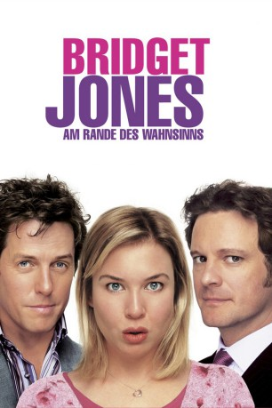

gesehen am 04.07.2017
gesehen am 04.07.2017Alternativ: Bridget Jones: The Edge of Reason gesehen am 04.07.2017
 
 IMDB-Wertung: 6.0 / 10
IMDB-Wertung: 6.0 / 10  Metascore:
Metascore: 
Rund? Na und? Das denkt sich die Titelheldin mittlerweile und sonnt sich in ihrem Liebesglück mit Darcy. Doch Liebeslust liegt nah bei Liebesfrust und so bröckelt die Idylle rapide, als eine grazile, langbeinige australische Arbeitskollegin ihrem Darcy gefährlich nahe kommt. Natürlich riecht Bridgets Ex-Lover Cleaver den Braten und setzt angesichts der Beziehungskrise des Pummelchens alles daran, bei ihr noch einmal unters Laken zu schlüpfen. Und die stolpert bei so viel Interesse von einem Fettnapf in den nächsten.
Jahr: 2004
Dauer: 107 Minuten
FSK: 6
Land: England Studio: UIPTonspuren: DTS - ,
Untertitel: Deutsch,
Auflösung: 1080p (1920x800) Größe: 8243 MB
Regisseur: Beeban Kidron
Drehbuch: Helen Fielding, Andrew Davies, Helen Fielding, Richard Curtis, Adam Brooks
Soundtrack: Harry Gregson-Williams, Stuart Roslyn
Darsteller:
 Renée Zellweger als Bridget Jones
Renée Zellweger als Bridget Jones Gemma Jones als Mum
Gemma Jones als Mum Jim Broadbent als Dad
Jim Broadbent als Dad James Faulkner als Uncle Geoffrey
James Faulkner als Uncle Geoffrey Celia Imrie als Una Alconbury
Celia Imrie als Una Alconbury Colin Firth als Mark Darcy
Colin Firth als Mark Darcy Tom Brooke als Production Assistant
Tom Brooke als Production Assistant Hugh Grant als Daniel Cleaver
Hugh Grant als Daniel Cleaver Jacinda Barrett als Rebecca
Jacinda Barrett als Rebecca Sally Phillips als Shazza
Sally Phillips als Shazza James Callis als Tom
James Callis als Tom Shirley Henderson als Jude
Shirley Henderson als Jude Mark Tandy als Derek
Mark Tandy als Derek Flaminia Cinque als Corset Lady
Flaminia Cinque als Corset Lady Jessica Hynes als Magda
Jessica Hynes als Magda Alex Jennings als Horatio
Alex Jennings als Horatio Ian McNeice als Quizmaster
Ian McNeice als Quizmaster Patrick Baladi als Steward
Patrick Baladi als Steward Michelle Lee als Thai Police Woman
Michelle Lee als Thai Police Woman Hon Ping Tang als Thai Jail Guard
Hon Ping Tang als Thai Jail Guard Jason Watkins als Charlie Parker-Knowles
Jason Watkins als Charlie Parker-Knowles Sam Hazeldine als Journalist
Sam Hazeldine als Journalist Simón Andreu als Mr. Santiago
Simón Andreu als Mr. Santiago Donald Douglas als Admiral Darcy
Donald Douglas als Admiral Darcy Wolf Kahler als Commentator
Wolf Kahler als CommentatorDatei: X:\3-Trilogie(A-F)\Bridget Jones\Bridget Jones - Am Rande des Wahnsinns (2004, FSK6, 1920x800).mkv seit 20.01.2016
Festplatte: HD Collection-2(A-Z)-3(A-M)
 Alle Filme aus Gruppe '3-Trilogie(A-F)\Bridget Jones'
Alle Filme aus Gruppe '3-Trilogie(A-F)\Bridget Jones'